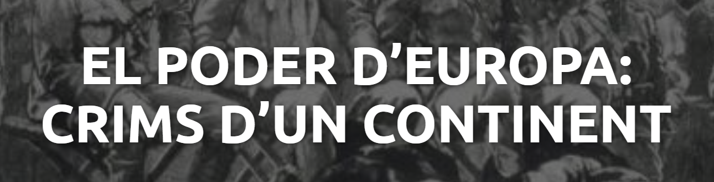
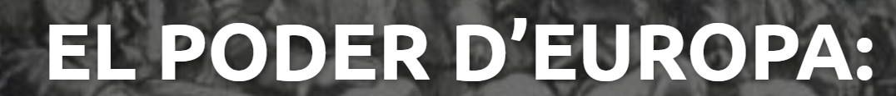

Denís Corral
Crec que aquest treball ha sigut una oportunitat per desenvolupar altres eines informàtiques i per acabar d’entendre tot aquest tema. M'ha agradat molt l’experiència de treballar amb aquest grup i sobretot de programar una web, que és una de les coses que més m’agraden. A més a més, hem tingut una bona organització i un bon treball en general.
Contacte
Jan Garcia
Jo he trobat aquest treball molt interessant en molts sentits, tot i que aquí només en posaré alguns:
Per una banda, m’ha agradat el fet que hagi sigut relativament lliure; ja que tot i que sí que és veritat que hi havia certes pautes a l’hora dels continguts mínims que hi havia d’haver, no hi ha hagut gaires restriccions a l’hora del format o semblants, la qual cosa ha permès l’originalitat i ha creat un ambient de treball més relaxat.Per una altra banda, també m’ha agradat que els grups s’hagin pogut triar, ja que treballar amb aquells companys que ho fan bé sempre és agraït.
Contacte
Carlos Montero
Ha sigut el primer cop que treballàvem junts hem aprofitat molt bé el temps a l’aula i m’ha agradat molt el resultat final. Aquesta modalitat de treball mitjançant una pàgina web em sembla molt interessant, ja que de tant en tant està bé provar diferents formats i el més important acabar aprenent coses noves.
Contacte
Esther González
Durant aquest període de treball, he pogut tenir l'experiència de treballar amb un grup una mica diferent del que solc treballar, i aprendre noves coses que aquest grup m'ha aportat. Sobre el treball realitzat, estic molt contenta amb el resultat, ja que hem pogut plasmar totes les idees que teníem al cap sobre l'imperialisme i el colonialisme de la manera més encertada possible. Gràcies al fet que el grup ens hem organitzat i entès de manera correcta, hem aconseguit fer el treball bé i sense cap inconvenient. Aquest treball m'ha agradat molt i no canviària la forma en la qual s'ha fet.
Contacte
Jan Casamitjana
Jo crec que ha anat bastant bé per acabar de rematar el tema i entendre millor les coses i amb més detalls. No he pogut fer gaire cosa, però pel que he llegit està interessant de tant en tant fer grups com aquests i treballar col·lectivament per poder compartir idees.
Contacte

Des del nostre punt de vista, aquest títol és adequat i molt enginyós perquè aconsegueix captar l’atenció del lector a la vegada que et fa pensar durant tot el treball.
Per què? Anem a analitzar-lo:
Aquesta part et crida l’atenció, a més de ser la part de la que més es parla durant tot el document, així que la posem al principi. De la mateixa manera, el posem més petit perquè volem donar èmfasi a la segona part.
Aquesta part, en canvi, és més poètica, per dir-ho d’alguna manera. Evidentment, l’hem posat per cridar l’atenció, però el missatge general és: Tota Europa havia comès crims, no ho oblideu. És una mena d’homenatge, més que un títol explicatiu.
Dit
això, també ens agradaria comentar que els crims no s’anomenen directament, però s’intueixen bastant fàcilment. Per exemple: el simple fet d’envair un altre territori; que ja és un crim terrible.La quantitat de morts, esclaus, guerra i terror sembrats en aquella època són, en part: “els crims d’Europa.”

MOLTES GRÀCIES